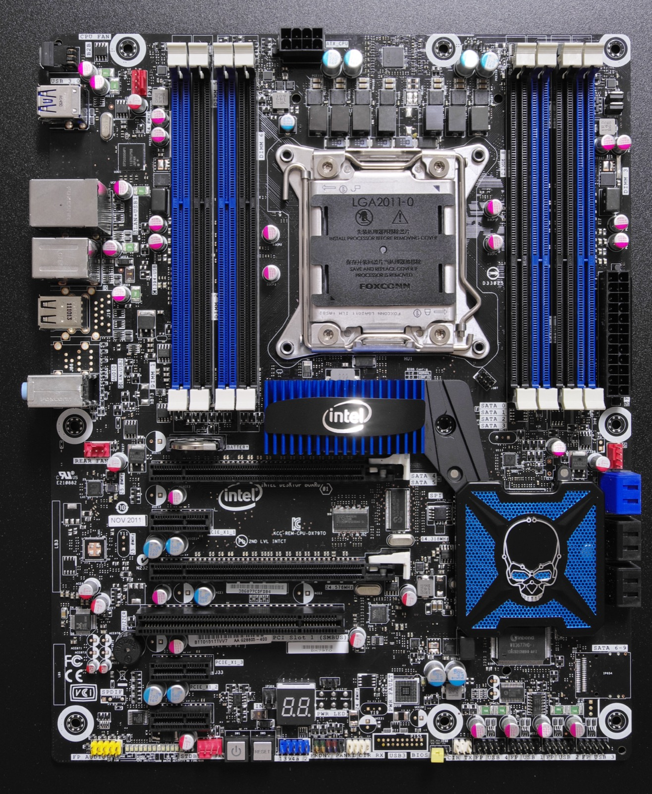
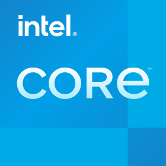

Intel晶圆制造工厂（图源：Wikimedia Commons）
7月24日凌晨，Intel交了一份让所有人都愣住的财报。Q2营收161亿美元，同比涨25%，15年来最快增速。市场预期144亿，实际数字高出了整整17亿。
盘后股价一度涨了13%。
但如果你翻到第二页，会发现GAAP净亏损110亿美元。
亏损110亿的公司，股价涨了13%。这个画面本身就值得停三秒。
我是真的觉得，这份财报里藏着一个所有人都该看到的判断，但它不在那些漂亮的营收数字里。它藏在Intel一季度的"砍"和这一季的"加"之间。
先说一个被大多数人忽略的细节。
三个月前，今年4月，Intel CEO陈立武（Lip-Bu Tan）开他上任后第一场财报电话会。那场会的基调是收缩。砍2026年资本开支到200亿美元以下，削减运营费用，强调"right-sizing"重组。当时华尔街的解读是，新CEO在踩刹车，先止血再想跑的事。
三个月后，这季。剧本完全反过来了。2026年资本开支从"200亿以下"上调到"超过200亿美元"，2027年还要"显著更高"。工具投入比2025年增加40%。（据Intel官方财报电话会）
一个季度之内，180度掉头。这不是打脸，这是陈立武等了三个月的东西终于到位了。
今天把采购订单下下去，就意味着我们对明年的客户有相当大的把握。
Dave Zinsner，Intel CFO
Zinsner这句话翻译成人话就是，钱不是瞎砸的，是订单到手了才花的。陈立武自己反复说的原则是，不见良率、不见IP就绪、不见客户engagement，就不投CapEx。Q1砍，因为还没看到。Q2加，因为都看到了。
Intel CEO陈立武（Lip-Bu Tan）（图源：Wikimedia Commons）
这个反转本身就是这份财报最该被读到的信号。不是25%的增速，不是110亿的亏损，是管理层把"已握在手的订单确定性"翻译成了产能的动作。
Intel这季财报里最让我愣住的数字，不是总营收，是数据中心与AI事业部（DCAI）的利润率。
去年同期，16.1%。这季，39.5%。
DCAI营收39.7亿美元
利润率 16.1%
每赚100美元，利润16美元
DCAI营收63亿美元
利润率 39.5%
每赚100美元，利润近40美元
一个季度，利润率翻了一倍多。半导体行业里，这种级别的利润率跳升，不常见。
陈立武在电话会上说，数据中心CPU需求"正在起飞"，供应短缺将持续。Zinsner把功劳归于工厂良率提高和生产周期缩短。但我寻思了一下，利润率能从一个季度翻倍式跳升，不光是良率的事，还有结构性变化在起作用。
AI从训练阶段走到推理阶段了。训练阶段GPU是主角，GPU负责大规模并行计算，批量处理。但推理和部署阶段不一样，数据处理、任务调度、网络通信、存储管理，这些活儿主要落在CPU肩上。GPU像流水线工人，CPU像车间主任。工人再多，车间主任不行，工厂也跑不快。
这也是为什么AMD同期把2030年CPU市场预测从1200亿美元直接上调到2200亿美元，几乎翻倍。（据AMD公开声明）这个数字不是拍脑袋来的，是AMD看到了跟Intel一样的东西，AI推理侧的CPU需求在爆发。
回到那个110亿亏损的事。
GAAP口径下，净亏损110.3亿美元。这个数字乍看确实吓人。但主因是CHIPS法案托管股份按市值计价，产生了125.3亿美元的非现金亏损。这是会计处理，不涉及实际现金流出。
剔除这项影响后，调整后净利润是22亿美元。
账面亏损和实际赚钱能力是两回事。市场显然看懂了这层区别，所以盘后才涨了13%而不是跌了13%。但这里有个细节值得玩味。同样是美国政府给的CHIPS法案资金，它在会计上变成了一笔"亏损"，这在逻辑上有点荒诞。你拿了政府的补贴，结果这笔补贴的会计处理让你的财报变得更难看了。这笔钱到底是帮了Intel还是害了Intel，取决于你读的是哪一页。
7月24日美股盘后有一个很有意思的巧合。
同一天，特斯拉股价暴跌14.52%。与此同时，Intel宣布特斯拉已成为其下一代14A制程AI芯片的客户。（据Intel官方财报电话会）
一边是市场对特斯拉前景的恐慌，一边是特斯拉在芯片制造上对Intel的背书。这两个信号放在一起，确实值得反复咂摸。
特斯拉选Intel的14A制程，量产时间要到2028年。这意味着特斯拉在为一个三年后的产品做芯片代工选择。在台积电产能紧张的背景下，英伟达、谷歌这些巨头都在找"第二供给极"，Intel成了唯一能落地的备选。第三方机构KeyBanc基于18A良率和客户对接进展预测，Intel代工业务有望在2027-2028年实现盈利转正。（据KeyBanc研究报告）
但这里有一个我不太确定的地方。Intel代工这季外部收入只有2.93亿美元，经营亏损还有21亿。虽然亏损环比收窄了3.48亿，但距离盈利的路还很长。代工业务能不能真正跑通，不取决于18A的良率到了85%，而取决于外部大客户愿不愿意把钱拍在桌上。现在看到的是特斯拉签了，但量产是2028年的事。三年里能不能兑现，谁知道呢。

Intel品牌标识（图源：Wikimedia Commons）
| Intel Q2 2026 关键数据一览 | |
|---|---|
| 总营收 | 161亿美元（同比+25%，超预期17亿） |
| Non-GAAP EPS | 0.42美元（预期0.21美元，翻倍） |
| Non-GAAP毛利率 | 41.8%（同比+12.1个百分点） |
| GAAP净亏损 | 110.3亿美元（含CHIPS法案非现金亏损125.3亿） |
| 调整后净利润 | 22亿美元 |
| DCAI营收 | 63亿美元（同比+59%，利润率39.5%） |
| 代工营收 | 58亿美元（同比+31%，亏损21亿） |
| Q3营收指引 | 158-168亿美元（中值163亿，超预期） |
| 2026资本开支 | 超过200亿美元（上季度还砍到200以下） |
聊到这里我突然想起一个事。当年Intel在PC时代是绝对的霸主，后来移动互联网来了，ARM架构把Intel打了个措手不及。再后来AI来了，英伟达的GPU成了主角，Intel被市场叙事成了"被AI浪潮甩在身后的旧巨头"。
但这份财报在说一个不同的故事。
AI从训练走向推理和部署，CPU的角色在变重。Intel签下的那些3到5年期长期服务器CPU采购合同，本质上是在押注这个趋势会持续。如果AMD的2200亿美元市场预测靠谱，那Intel目前的估值可能还有上行空间。
陈立武在电话会上说了一句话，"我们现在几乎已到CPU/GPU平价，未来单位口径上甚至可能更偏CPU"。（据Intel Q2财报电话会）这句话如果是三年前说的，你会觉得他在吹。但放在DCAI单季营收63亿、同比增长59%的背景下，它有了一层不同的味道。
GPU负责训练，CPU负责推理和调度。训练阶段的算力竞赛可能快要见顶了，但推理阶段的算力需求才刚开始。这是Intel这份财报真正在赌的东西。
它赌的不是芯片，是AI推理时代的CPU定价权。
说真的，我自己的感受是，这份财报确实好看，但好看的数字背后还藏着不少没解决的问题。
代工业务外部收入2.93亿美元，跟58亿的总营收比几乎可以忽略。18A良率跑在预期前面，但没有具名外部大单公示。管理层说外部客户engagement"非常正面、信心增强"，但分析师直接追问"信心何时兑现成客户公告"，这个问题没被回答。GAAP口径还是亏损的。2027年正向自由现金流有压力，不排除未来通过资本市场融资。坦率地讲，这些悬而未决的问题，一份漂亮的财报不能回答。
但这份财报至少证明了一件事。Intel在AI这波浪潮里，还没有掉队。
三个月前还在砍预算的公司，三个月后把资本开支加码到200亿以上。这个动作本身就比任何营收数字都更有信号价值。陈立武不是在盲目扩张，他是在"已握住订单"之后才把产能跟上。这种纪律性，是Intel过去十几年最缺的东西。
代工业务能否真正盈利，18A和14A能否按时量产，外部大客户是否持续追加订单。这些问题的答案，需要未来几个季度去验证。但方向上，Intel这次没有走错。
谢谢你看我的文章。
数据来源：Intel Q2 2026官方财报、财报电话会实录、AMD公开声明、KeyBanc研究报告、格隆汇实时快讯。截至2026年7月24日。